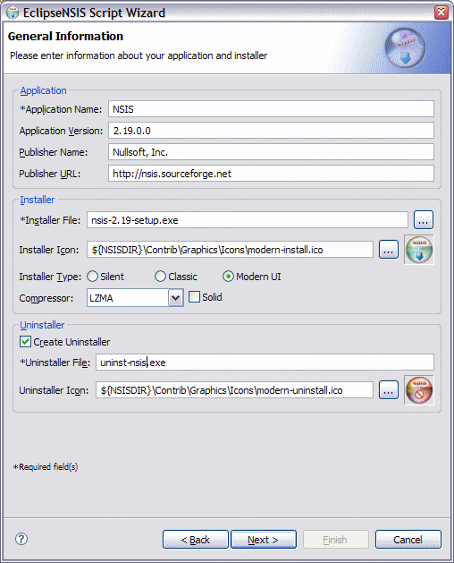

Script Wizard
General Information
This page is used to collect some general, mainly required, information about the NSIS script and installer.

- Application Name
- The name of application that will be installed. ← Back
- Application Version
- The version of the application. ← Back
- Publisher Name
- Name of the application publisher. ← Back
- Publisher URL
- Optional URL for the publisher. A shortcut to this URL will be created in the application's start menu group. ← Back
- Installer File
- Name of the output executeable file to be generated after script compilation. ← Back
- Installer Icon
- Name of the icon file to be associated with the installer. If left blank, a default icon will be assigned by NSIS. ← Back
- Installer Type
- The installer type. There are three installer types, which are described below. ← Back
- Silent
- A silent installer runs as a background process with no user interface or interaction.
- Classic
- A classic installer has the standard built-in NSIS interface.
- Modern UI
- The Modern UI installer provides a user interface with a style like the wizards of recent Windows versions.
- Compressor
- Specify the compressor to be used to pack the installer data. Currently NSIS supports ZLIB, BZIP2 and LZMA. ← Back
- Create Uninstaller
- Option whether to create an uninstaller for the application. ← Back
- Uninstaller File
- Name of the uninstaller executable file. ← Back
- Uninstaller Icon
- Name of the icon file to be associated with the uninstaller. If left blank, a default icon will be assigned by NSIS. ← Back
Previous | Contents | Next
Copyright © 2004, 2005 Sunil Kamath (IcemanK).